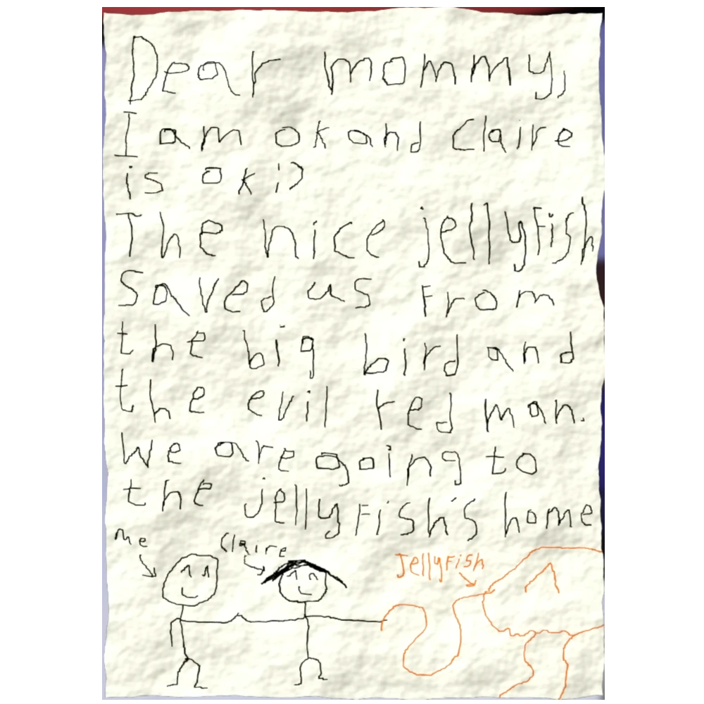

The Games!
The games altogether are simple and easy to understand, there are some parts of them that don’t make the most sense or seem to lessen the quality of them.
One of the biggest issues people had with the first chapter of Garten of BanBan is the short run time. The first chapter only lasts roughly less than a half hour, which normally isn’t a problem. However people really seemed to think that this game was the one to “jump the shark”, which led to it having some negative reactions. However, the developers adjusted to this and lengthened the second chapter, which was roughly an hour and a half- three times the amount done in the previous chapter. This trend follows through the rest of the games, each other being roughly an hour and a half.
TThe issue that seems to have no real adjustment to it is the graphics. The games have this really weird texture on the characters which gives them a gross look. This is possibly the worst part of the actual games, but like any good developer does, they waved away the issues with the power of lore. According to the information provided in the games, givanium gives the mutants a weird veiny texture.
Altogether, the game's mechanics and graphics aren’t big issues and are pretty easy to use if you’re a first time horror fan. This is consistent across all of the games and is what makes it a pretty fun series to play.
Check It Out!
Want to explore more of the games? Check out these pages!